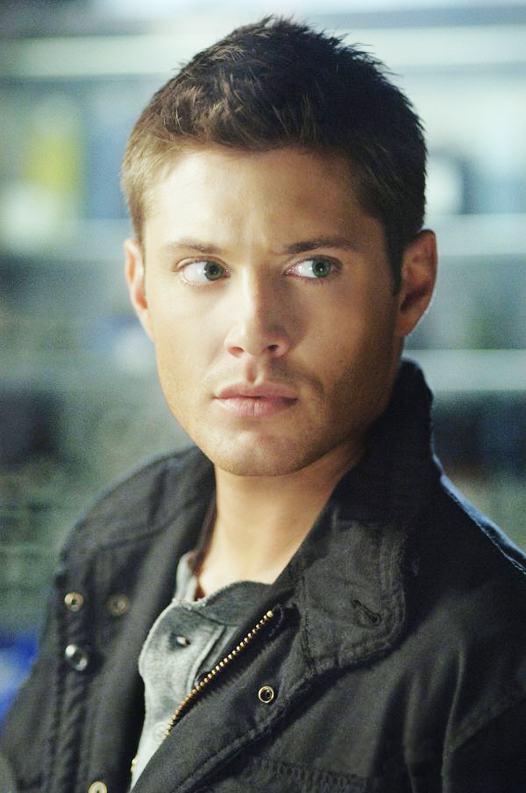
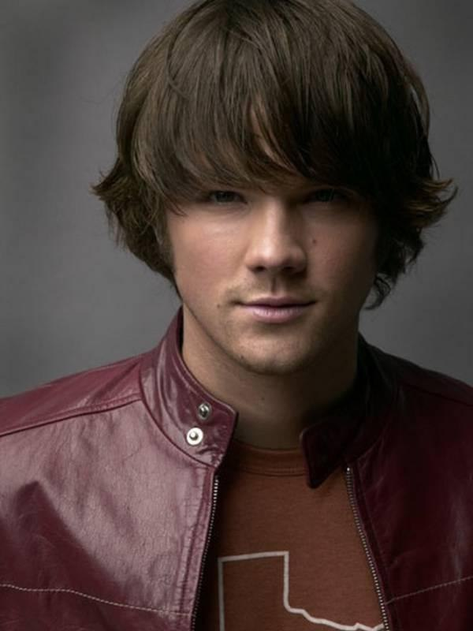
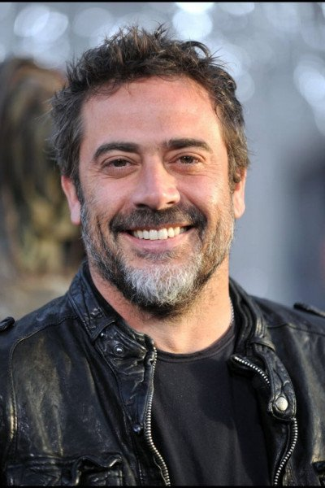
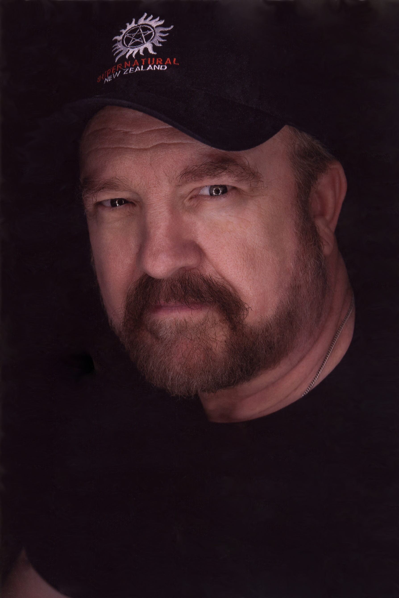

Дженсен Эклс

Дата рождения: 1 марта 1978 года
Место рождения: Даллас, Техас
Отношения: супруга Дэннил Эклз (трое детей)
Рост: 1.86 м
Будучи совсем маленьким Дженсен снимался в рекламе товаров для детей. Полноценно его карьера началась в 1996 году, после появления сразу в трех сериалах. В 1997 году он снимался в популярном сериале «Дни нашей жизни». В 2000 году Дженсен покидает «Дни нашей жизни», ради мини сериала о Мэрилин Монро «Блондинка». В том же году он пробовался на главную роль в сериал «Тайны Смолвилля». В 2001 году он снимался у Джеймса Кэмерона в сериале «Тёмный ангел», вместе с Джесикой Альбой.
2003 год принес актеры много работы сразу в нескольких проектах, он снялся в «Бухте Доусона», «Спокойной жизни», а так же в короткометражке «The Plight of Clownana». В 2004 году актер возвращается в Ванкувер, где снимается в нескольких эпизодах сериала «Тайны Смолвилля».
Джаред Падалеки

Дата рождения: 19 июля 1982 года
Место рождения: Сан-Антонио, Техас
Отношения: супруга Женевьев Падалеки (трое детей)
Рост: 1.97 м
В 2003 году Джаред засветился в большой комедии «Оптом дешевле». В 2005 снялся в фильмах «Волк-одиночка» и «Дом восковых фигур», а затем принял участие в кастинге к сериалу «Сверхъестественное», который с успехом прошел и в итоге получил одну из главных ролей. После успеха сериала «Сверхъестественное», Джаред снялся еще в нескольких фильмах, а так же попробовал себя в роли ведущего реалити-шоу, которое продюсировал Эштон Кутчер.
Джаред принимал участие в пробах на роль Анакина Скайокера, однако не прошел. У актера польские корни по линии отца. В 2010 году Джаред женился на Женевьев Кортезе, а в марте 2012 у счастливой пары родился сын, которого они назвали Томас Колтон.
Саманта Смитт

Дата рождения: 4 ноября 1969 года
Место рождения: Сакраменто, Калифорния, США
Отношения: не замужем
Рост: 1.73 м
Саманта Смит впервые начала сниматься в 1996 году – ее первой работой была небольшая роль в сериале «Сайнфилд». За последующие 20 лет Саманта приняла участие более, чем в 40 различных проектах. Саманте Смит довелось сняться и в нескольких полнометражных фильмах, в том числе в кинокартине «Избранный», а также в фильмах «Стрекоза», «С какой ты планеты?» и «Джерри Магуайер».
Актриса наиболее известна как исполнительница роли Мэри Винчестер в сериале «Сверхъестественное». Также Саманта снималась в таких известных проектах, как «Доктор Хаус», «Трансформеры», «Притворщик», «Избранный» и многих других. Основная сфера деятельности актрисы – это многосерийные проекты.
Джеффри Морган

Дата рождения: 22 апреля 1966 года
Место рождения: Сиэтл, США
Отношения: супруга Хилари Бертон (один)
Рост: 1.73 м
Джеффри Дин Морган родился 22 апреля 1966 года в Сиэтле (штат Вашингтон) в семье Сэнди Томас и Ричарда Дина Моргана. Ходил в начальную школу имени Франклина, среднюю Роуз Хилл. В 1984 году Морган закончил старшие классы школы Лейк Вашингтон. Джеффри хотел стать профессиональным баскетболистом, но травма заставила оставить спорт. Некоторое время он занимался рисованием и писательством, но после переезда в Лос-Анджелес Морган попал в киноиндустрию.
Первые роли Моргана были в сериалах («Uncaged Campaigns», «Уокер, техасский рейнджер», «Скорая помощь»). Снимался в популярных телесериалах «Анатомия страсти» и «Сверхъестественное» . С декабря 2006 года в средствах массовой информации обсуждаются роман и размолвки Джеффри Дина Моргана и актрисы Мэри-Луиз Паркер. В 2009 году начинает встречаться с актрисой Хилари Бертон. В марте 2010 года у Джеффри и Хилари родился сын Огастус Морган, а 16 февраля 2018 года — дочь, Джорджи Вирджиния Морган.
Марк Пеллегрино

Дата рождения: 9 апреля 1965 года
Место рождения: Лос-Анджелес, Калифорния, США
Отношения: супруга Трэйси Азиз (один ребенок)
Рост: 1.85 м
Марк Пеллегрино начал сниматься с середины 80-х годов. Вначале он появился в сериале «Законы Лос-Анджелеса», и в фильме «Роковая красотка», потом было еще множество небольших ролей. В 90-е годы Марк Пеллегрино активно ходил на кастинги, и в это же время работал страховым агентом – кино пока что не приносило достаточных доходов… Преимущественно Пеллегрино доставались роли второго плана, и, как правило, это роли злодеев. Марк Пеллегрино имеет очень обширную фильмографию, так, он сыграл эпизодические роли во множестве популярных сериалов, — «Остаться в живых», «Анатомия страсти», «Скорая помощь», «Без следа», «Секретные материалы», «Касл», «Декстер».
Марк Шеппард

Дата рождения: 30 мая 1964 года
Место рождения: Лондон, Великобритания
Отношения: бывшая супруга Джессика Шеппард (двое детей), супруга Сара Луиз Фудж (один ребенок)
Рост: 1.78 м
15 лет Марк стал профессиональным музыкантом, ездил на гастроли с Робином Хичкоком в качестве барабанщика. После переезда в США Марк Шеппард плотно занялся своей актерской карьерой. Первой его ролью стал эпизод в сериале «Шелковые сети». После роли в фильме «Во имя отца» Шеппарда-младшего стали приглашать на второстепенные роли в популярные сериалы. В 1997 году Марк стал со-режиссером в комедии«Американский вампир». Позже он выступил режиссером, сценаристом и продюсером фильма «Комната 101», в которой снял своего отца. В 2010 году вышел фильм «Приключения на таинственном острове», в котором Марк Шеппард сыграл молодого капитана Немо и сам фильм срежиссировал.
Миша Коллинз

Дата рождения: 20 августа 1974 года
Место рождения: Бостон, Массачусетс, США
Отношения: супруга Виктория Ванточ (двое детей)
Рост: 1.84 м
Миша принимал участие в проектах на Национальном публичном радио в 1995. У него была мечта стать политиком, он даже стажировался в Белом Доме при администрации Клинтона. В те годы, когда он там стажировался,Миша Коллинз понял, что это не для него. В самом начале своей актерской карьеры, Миша Коллинз играл мелкие роли в таких телесериалах как «Зачарованные», «Полиция Нью-Йорка», «Скорая помощь», «C.S.I.: Место преступления» и др. В начале 2000-х у него появилась первая достаточно крупная роль в телесериале «24 часа». Ситуация меняется в 2008 году, когда Миша Коллинз утвердился на роль ангела по имени Кастиэль в мистическом сериале «Сверхъестественное». К тому времени сериал уже набрал популярность и в итоге в 5 сезоне его включили в основной актерский состав, к тому же его собственная популярность заметно выросла.
Джим Бивер

Дата рождения: 12 августа 1950 года
Место рождения: , Ларами, Вайоминг, США
Отношения: супруга Сесиль Адамс
Рост: 1.80 м
Джим Бивер родился в городке Ларами (штат Вайоминг) в семье Дороти Адель (в девичестве Кроуфорд) и Джеймса Нормана Бивера-старшего (1924—2004)[4]. Его отец имел французско-английское происхождение (в оригинале фамилия выглядит как де Бовуар; Бивер дальний родственник писательницы и философа Симоны де Бовуар и генерал-губернатора Пенсильвании Джеймса Бивера[5]). Мать Бивера имела смесь шотландских, немецких корней и корней Чероки и была потомком сенатора, губернатора и трижды генерального прокурора США Джона Критендена[6]. Хотя семья родителей Бивера долгое время жила в Техасе, сам Джим родился в Ларами, когда его отец делал дипломную работу в области бухгалтерского учёта в Университете Вайоминга. После возвращения в Техас отец Джима работал бухгалтером и служителем в Церкви Христа (англ. Church of Christ) в Форт-Уэрте, Кроули[en] и Далласе. Большую часть юности Джим с семьёй провёл в Ирвинге, хотя его отец проповедовал в соседних общинах. Джим и три его младшие сестры (Дениз, Рене и Тиддли) обучались в Ирвингской старшей школе (где Джим был одноклассником Фрэнка Бирда, ударника группы ZZ Top), но в последний год Бивер был переведён в Христианскую Академию в Форт-Уэрте, которую окончил в 1968 году. Он также прошёл курсы в Христианском Колледже в Форт-Уэрте. Несмотря на то, что Бивер участвовал в нескольких школьных спектаклях, он не проявлял интереса к актёрской карьере. Однако погрузился в историю кино и выразил желание начать карьеру писателя, несколько его рассказов было опубликовано ещё в школе.